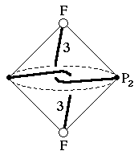
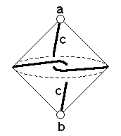

204
204
 206
206 Orbifold Atlas Home Page
Orbifold Atlas Home Page
 Crystallographic Topology Home Page
Crystallographic Topology Home Page
Underlying Topological Space: RP2 double suspension; Figure Pseudo-Symmetry (FPS): 2
Euclidean 3-Orbifold with Invariant-Lattice-Complex Letters
(left), Wyckoff Site Letters (right)
 
| FPS | Mult | Lattice Comp | Group Graph | Wyckoff Set | 2[4]Cover |
| 4-2 | F | 30 | a, b | ||
| 8-1 | F2[P2]F2 | 0<3>0 | (c:a-b)1 | ||
| 24 | 1 | d:c | |||
| 2 | 24-1 | [J2,V*,J2,S*]& | 2*=<1>& | (d1:)2 | #206(d) |
| 24-1 | F6[J2]F6 | 2*=30<1>30 | (d2:a-b)3 | [#202(e)] |
Lattice Points: (1) 0,0,0 + (1/4,1/4,1/4) x2; (2) 1/4,0,0 + (0,1/8,0) x4 &; (3) 0,0,0 + (0,1/4,0) x2
204
206
Orbifold Atlas Home Page
Crystallographic Topology Home Page
Page last revised: